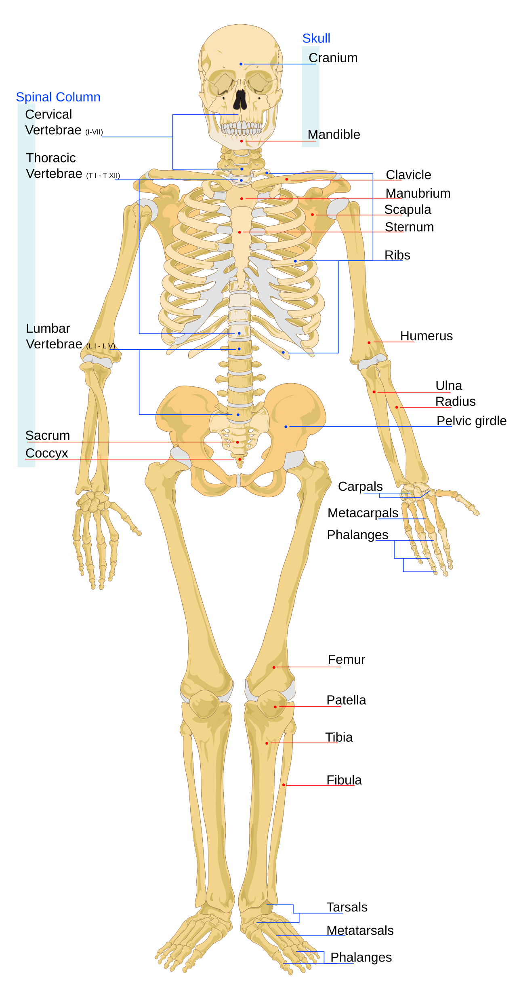

Everyone has a growth spurt in puberty, but not at the same age. Move the age slider and compare the two curves: how fast does each person grow each year?
Hormones are chemical messengers carried in the blood. Click a gland to see its hormone and target, then run the puberty chain.
Build a lunch for a 14-year-old who plays football after school. Click foods to add them (click again to remove). Try to get every bar into the green zone.
Energy in comes from food; energy out goes on growing, keeping warm and moving. Choose a day's meals and activities and watch the balance.
The skeleton supports, protects, moves, makes blood cells and stores minerals. Pick a bone, then pick its main job. Ten in a row wins.

Skeleton: public domain (Wikimedia Commons, Human skeleton front en.svg).
Choose a joint and drag the slider to move the bone. How far can it go? Then take away the cartilage and synovial fluid.
Muscles can only pull. Bend and straighten the arm and watch which muscle contracts (gets shorter and fatter) and which relaxes.
Click a brain region to see its job. Then move the age slider: which parts are still developing in your teens?
Read each situation and choose a response. You will see possible immediate and future consequences for your physical, emotional and social health.
Click the box as soon as it turns green. Do five tries, then turn on distraction and try again. Alcohol slows reactions even more than distraction.
| Try | Normal / s | Distracted / s |
|---|
This is a model chest. Pull the diaphragm down and push it up. Watch the volume, the pressure and the air.
Choose a factor and test 10 virtual students. Does it affect vital capacity (the most air breathed out after a deep breath in)?
| Student | Height / cm | Vital capacity / L |
|---|
Add years of smoking and watch what happens to the cilia, the alveoli and the blood. Then press Quit: which damage recovers?
Fifteen mixed questions from the whole unit. Revise any topic where you get less than 2 out of 3.
Health Lab is made by What the Cell for MYP 3 Science, Unit 1: Looking After Ourselves. Values are simplified for learning.